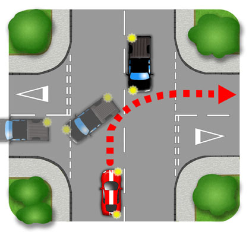
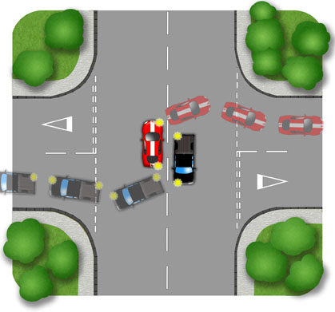
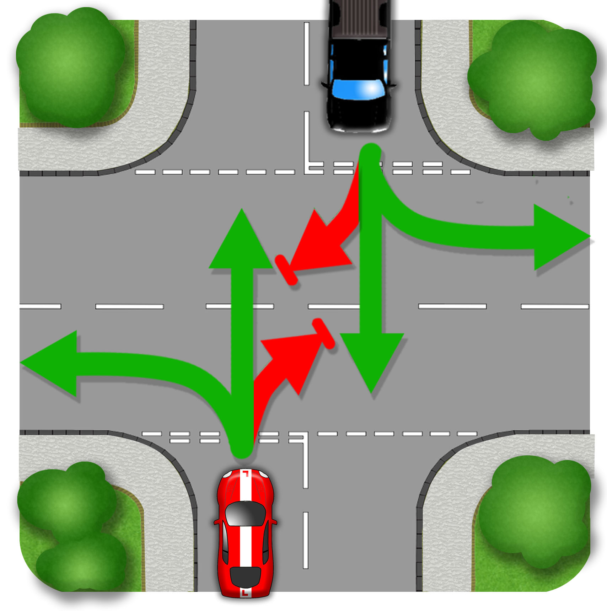
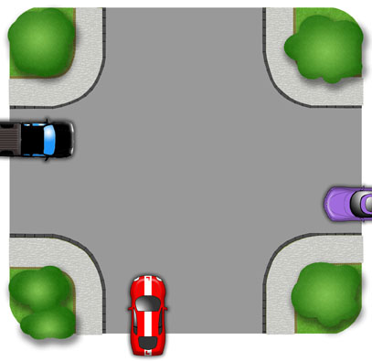

Nearside to Nearside

Offside to Offside

When you and an opposite vehicle are turning right at crossroads, you have the choice of passing nearside to nearside or offside to offside. At smaller junctions, nearside is often most practical and at larger ones offside can allow more visibility. If you’re not sure you can hold back a little and let the oncoming vehicle turn first. The usual point of turn, just behind the centre line of the side road may be compromised as you negotiate the other vehicle.
Emerging

When emerging at crossroads, you should plan to set off ahead of the opposite vehicle if you are turning left or going ahead. You should allow the oncoming vehicle to proceed first if you’re turning right. If you’re both turning right, make eye contact with the opposite driver to decide. Be courteous if they arrived first.
This order of progress is not necessarily widely understood. For this reason, proceed carefully whichever way you are going. Study the body language of the opposing driver. If they are leaning forward and looking left and right into the main road, they are likely to proceed. If they’re more relaxed and looking your way, they’re likely to be waiting. Where opposite drivers flash or gesture for you to go first, again, proceed carefully.
Unmarked

Nobody has priority at unmarked crossroads so approach with lots of caution. Look, Assess and Decide, then Act. Make eye contact with other drivers to determine who goes first. If they’re leaning and creeping forward, then sit back and wait. If they’re stopped and looking at you then proceed carefully.